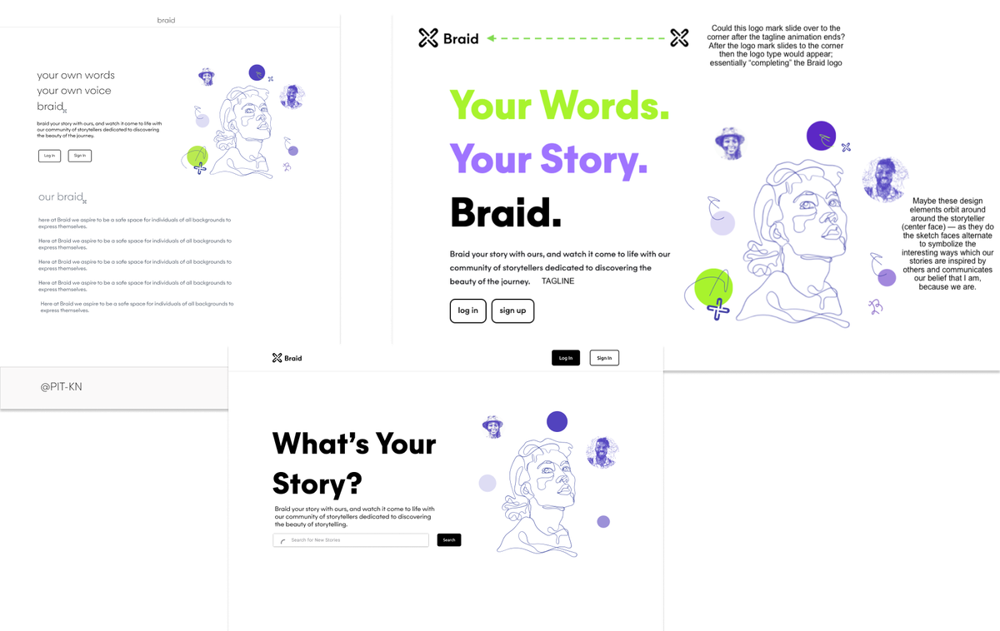
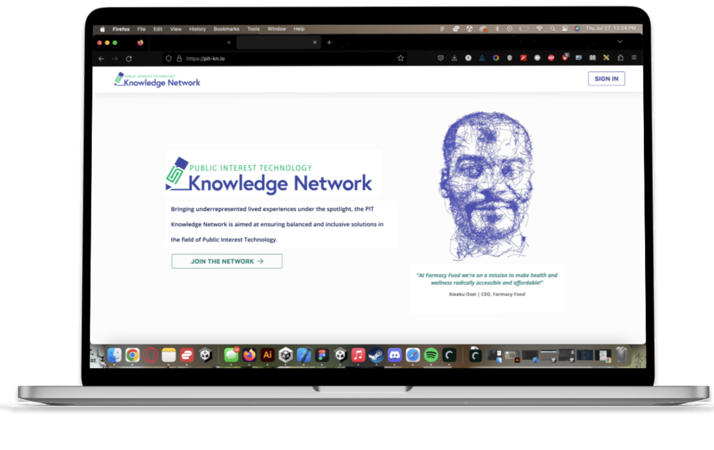
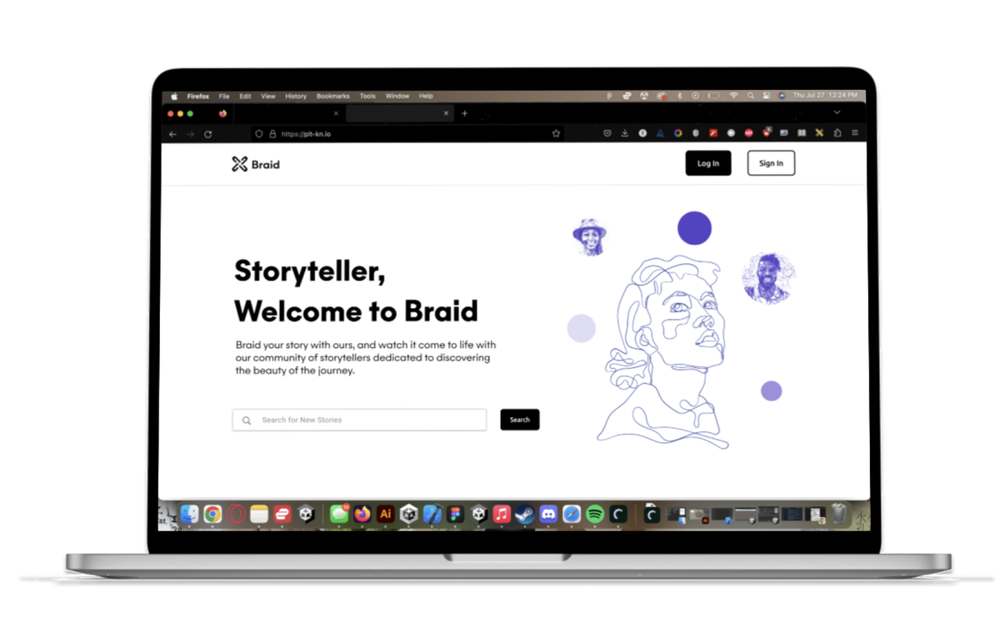
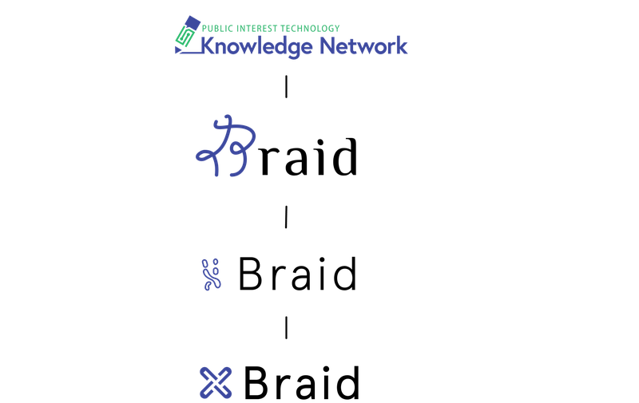

Instructional Design · UX Research · Public Interest Tech
I directed learning and UX research across 100+ community members, synthesized it into a shared articulation of purpose, and translated it into a redesign that lifted new sign-ups 40%.
The Problem
Braid is a knowledge network in public interest technology — a community of academics, technologists, and public servants. The platform had members and value, but its purpose was diffuse. New visitors couldn't quickly grasp what Braid was for or why they belonged, and sign-up conversion suffered for it.
The redesign couldn't start with pixels. It had to start with synthesis — turning what 100+ very different stakeholders believed Braid was into a single, shared articulation the whole organization could build against.
My Process
I directed research operations across 100+ diverse stakeholders — academics, technologists, and public partners — synthesizing qualitative data into a centralized insight repository structured for non-technical partners to use in curriculum and product decisions.
I facilitated 5+ cross-functional synthesis workshops applying instructional design principles to move a room of competing perspectives toward a single shared articulation of product purpose. That alignment is what made the redesign possible.

Design explorations — three homepage directions explored alongside messaging and brand hierarchy decisions.
High-fidelity Figma prototypes, usability testing with first-time visitors and existing members, engineering handoff and iteration. The visual identity was rebuilt from scratch — including a new brand mark drawn from the West African Ife knot, embedding the community's roots into the identity rather than decorating around it.


Before → After. Same product, different story — the redesign led with who the community is for, not what it is.

Logo evolution — from the original mark through the Ife knot-inspired final Braid identity.
Results
The shared articulation of purpose drove a homepage and identity redesign that produced a measurable lift in conversion — proof that the research and synthesis work translated directly into outcomes the organization cared about.